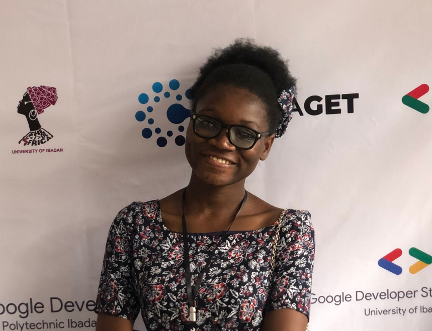

Due to my interest in coding, I opted in for web development and fate made me come across a group named Code with Imole
. Today, I will be talking about my experience so far with them.
The first class commenced in the second week of January. It started with getting to know about programming, internet, web and email.
This is my first technical assignment. I have to write some codes and upload it on Github pages.
Below is my picture
Well, I'm not sure how to combine this class with my academics but I have to make the sacrifice and burn my candle to be a diligent student.
I will not give up, I'll strive till I achieve my goal of being a developer.
A very big thank you to the organizers and facilitators of this wonderful group.
I made it to the second stage!!!
I was not aware CWI is in various stages. All I did was dedicate myself to the learning process and my assignment. Alas! I saw myself walking on the aisle of second stage.
This is my first assignment in the second stage and it is about basic knowledge of CSS